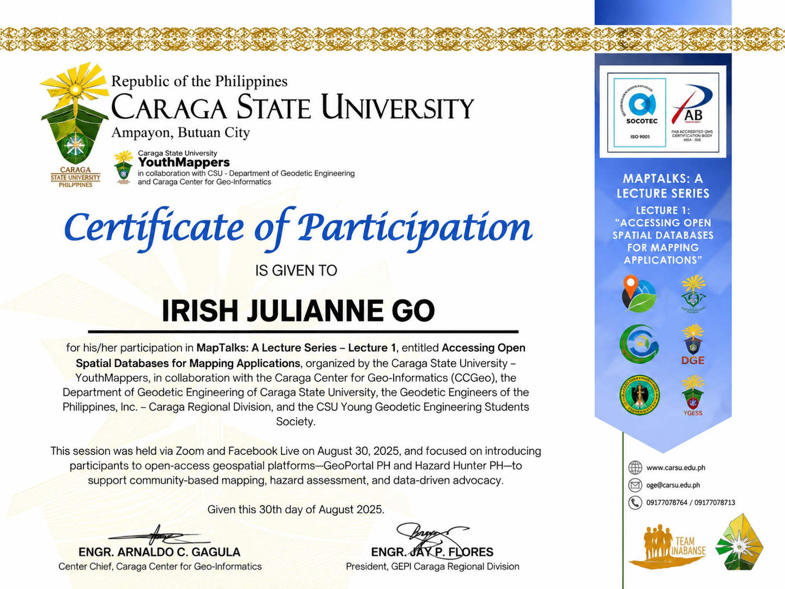

Certificate Preview
Documented participation in specialized geospatial lectures, spatial database seminars, and disaster resilience GIS forums.

Participated in MapTalks: A Lecture Series – Lecture 1, organized by Caraga State University – YouthMappers in collaboration with the Caraga Center for Geo-Informatics (CCGeo), the Department of Geodetic Engineering (CSU), the Geodetic Engineers of the Philippines, Inc. (GEPI) – Caraga Regional Division, and the CSU Young Geodetic Engineering Students Society (YGESS). Focused on introducing open-access geospatial platforms—GeoPortal PH and Hazard Hunter PH—to support community-based mapping, hazard assessment, and data-driven advocacy.
Explored geospatial approaches to urban heat mapping, thermal remote sensing datasets, and spatial visualization techniques to support climate-resilient community planning.
Examined the practical application of Geographic Information Systems (GIS) in hazard risk mapping, vulnerability assessments, and decision-support tools for community disaster preparedness.
Additional credentials and seminar records will be added as the portfolio is updated.